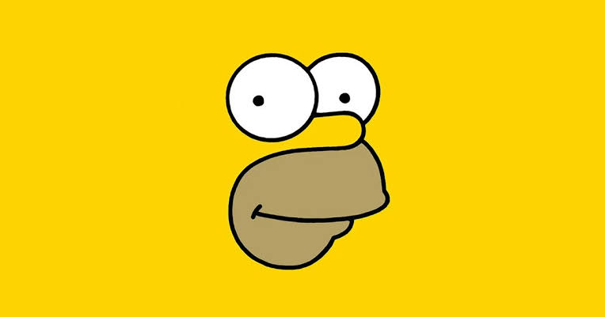
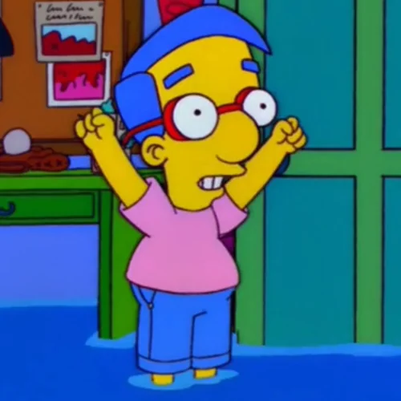
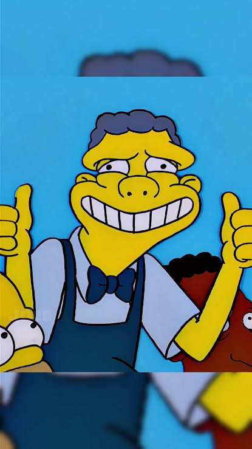
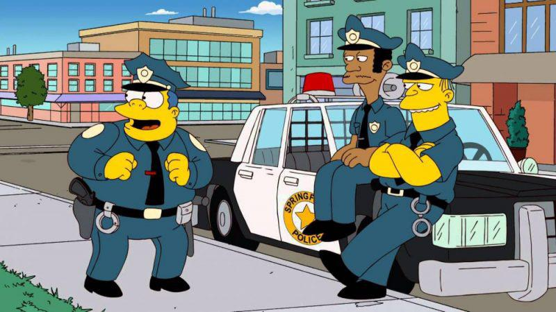

Sabor inolvidable
Una receta tan secreta que ni Krusty recuerda todos sus ingredientes.
Archivo Krusty Burger
Todo comenzó con Krusty el Payaso y una idea sencilla: poner su cara en una hamburguesa y esperar que Springfield hiciera el resto.
Desde entonces, servimos comida rápida, decisiones cuestionables y suficiente salsa para mantener el misterio.
Manifiesto de la casa
No prometemos perfección. Prometemos que siempre habrá una mesa, una bandeja y una excusa para volver.
Una receta tan secreta que ni Krusty recuerda todos sus ingredientes.
Porque el hambre no debería depender del sueldo del señor Burns.
Cada pedido viene con una historia, una sorpresa o una sospecha razonable.
Personal autorizado
Un grupo de Springfield que trabaja duro para que tu hamburguesa llegue antes de que cambies de opinión.
Fundador y experto en sonreír para las cámaras.

Probador oficial de hamburguesas. Siempre disponible.
Inversionista. Prefiere que la salsa sea rentable.
Especialista en bebidas y pausas estratégicas.

Asistente de promociones y amigo de confianza.

Encargado de que nadie se robe las papas.

Control de calidad. Llega por una rosquilla y se queda por el combo.